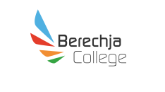

Mijn advies
Gebruik de website voor bronnen, routekeuze en quiz. Gebruik de lesbrief voor het groepsplan, meten en reflecteren. Beide volgen dezelfde opdracht; zo blijft de begeleiding overzichtelijk.


BERECHJA COLLEGE × IVN NATUUREDUCATIE
Wat overblijft, vertelt een verhaal. Onderzoek het op Urk, kies jullie aanpak en test wat er beter kan.
Jullie opdracht: help een gekozen doelgroep om minder eetbaar voedsel weg te gooien.
Samen onderzoeken · Zelf kiezen · Echt uitproberen
VAN VOEDSEL NAAR NATUUR
Voor eten zijn bodem, water, energie en werk nodig. Als eetbaar voedsel wordt weggegooid, gaat ook een deel van die inzet verloren. Jullie volgen één product, onderzoeken waar het misgaat en proberen een verbetering uit.
Een mooie campagne is het begin. Jullie laten ook zien waarom jullie boodschap klopt en wat de test oplevert.
Waarom leren door ervaren bij IVN pastDEZELFDE BASIS VOOR ELKE GROEP
Jullie werken in je bestaande team. In zes weken hebben jullie achttien lessen van honderd minuten: dertig uur. Het plan van aanpak maak je vooraf; planning en logboek houd je bij in Teams en Tasks/Planner.
AI mag je gebruiken. Bijvoorbeeld om uitleg te krijgen, ideeën te ordenen, een artikel te begrijpen of een tekst te verbeteren. Lees de oorspronkelijke bronnen, controleer feitelijke claims en noteer welke hulp je gebruikte. Eigen bezoeken, meetgegevens, keuzes en uitleg blijven van jullie. Vul nooit verzonnen gegevens of privé-informatie in.
Dit project begint bij de basis. Eerdere voedselprojecten met andere groepen zijn inspiratie voor de opdracht; je hoeft die niet te kennen.
ÉÉN HOOFDVRAAG · DRIE KEUZEROUTES
Kies eerst jullie aanpak. Kies daarna de vorm van jullie campagne. Elke route vraagt om onderzoek, een test en een onderbouwd resultaat.
MAAK JULLIE RESULTAAT ZICHTBAAR
Voor groepen die eetbare resten wegen. Vul voor elke periode zeven gemeten dagen met hetzelfde aantal deelnemers in. De rekentool rekent per persoon per dag. Bij een wisselende bezetting gebruik je het werkblad en vergelijk je per eetmoment.
Een kleine proef geeft een aanwijzing. Andere maaltijden of deelnemers kunnen de uitkomst beïnvloeden.
TIEN VRAGEN VOOR EEN GOED STARTGESPREK
Weet jij wat je kunt redden en wanneer veiligheid voorgaat? Kies een antwoord en ontdek de uitleg.
Je krijgt één punt per goed antwoord. De eerste keuze telt. Gebruik de quiz om te leren; dit is geen becijferde toets.
Download de quiz op papierAntwoorden en score blijven alleen in dit geopende scherm. Er worden geen leerlinggegevens verstuurd of opgeslagen.
EXTRA VERDIEPING
Een verpakking kan eten beschermen én afval veroorzaken. Onderzoek die afweging bij jullie product. Microplastics kunnen een verdiepingsvraag zijn, terwijl voedselverspilling de hoofdopdracht blijft.
Vergelijk een nieuwsclaim over microplastics met informatie van het RIVM. Noteer wat is aangetoond, wat wordt vermoed en wat onzeker is. Maak daar een zorgvuldige informatiekaart van.
Gevonden zwerfafval vertelt iets over afval in de omgeving. Het bewijst niet hoeveel microplastic in eten zit. Doe geen uitspraken over de veiligheid van jullie voedsel op basis van een eenvoudig schoolproefje.
Lees de uitleg van het RIVMVOOR HET GESPREK MET IVN
Zes projectweken met drie lessen van honderd minuten per week: achttien lessen en dertig uur. De bestaande teams blijven intact. Meetweken lopen deels parallel aan de lessen. Bezoekdata, testmomenten en campagneverspreiding spreken we af.
Gebruik de website voor bronnen, routekeuze en quiz. Gebruik de lesbrief voor het groepsplan, meten en reflecteren. Beide volgen dezelfde opdracht; zo blijft de begeleiding overzichtelijk.
De keuzevrijheid en de campagne voor Urk blijven. Eerdere PPD-lesontwerpen met andere groepen geven inspiratie voor bedrijfscontact, productontwikkeling, onderzoek en LOB. De huidige leerlingen krijgen de nodige uitleg vanaf de basis.
Een vooraf goedgekeurd plan van aanpak, toegestaan en verantwoord AI-gebruik, wintergeschikt onderzoek, drie snackbar- of supermarktbezoeken in de bijbehorende route en campagnes voor huishoudens én supermarkten. Microplastics blijft een verdieping.
Voorgestelde beoordeling: onderzoek en bronnen 25%, verbinding met natuur 15%, test en conclusie 25%, campagne 20%, individuele bijdrage 15%. De docent stelt de definitieve beoordeling vast. Het bestaande PPD-format voor het plan van aanpak en de Teams-werkwijze zijn leidend.
Een wintergeschikt bedrijfsbezoek op Urk vervangt de teeltplek. De onderstaande bedrijven zijn mogelijke partners; er is nog geen bezoek afgesproken.
Stem met IVN af hoe een visbedrijf past bij de inhoudelijke uitgangspunten en de in het concept genoemde checklist voor boerderij- en visserijeducatie. Houd bij het bezoek aandacht voor natuur en voedselproductie, naast efficiëntie en reststromen. Als een bezoek niet lukt, gebruiken we een gastgesprek en een begeleide praktijkcasus.
Boodschappenhoek Urk: bundel klasvragen en stem één gesprek met een medewerker af. Vraag naar actuele behoefte en voorwaarden. Deelname, inzameling en voedseloverdracht zijn nog niet geregeld. Nieuw gekocht voedsel is geen aangetoond gered overschot; ontvangers worden niet over hun persoonlijke situatie bevraagd.
VERDER LEZEN EN CONTROLEREN
Begin bij deskundige bronnen. Een ondernemerswebsite laat zien wat een bedrijf over zichzelf vertelt; controleer belangrijke claims ook elders. Bronnen gecontroleerd op 24 november 2026.